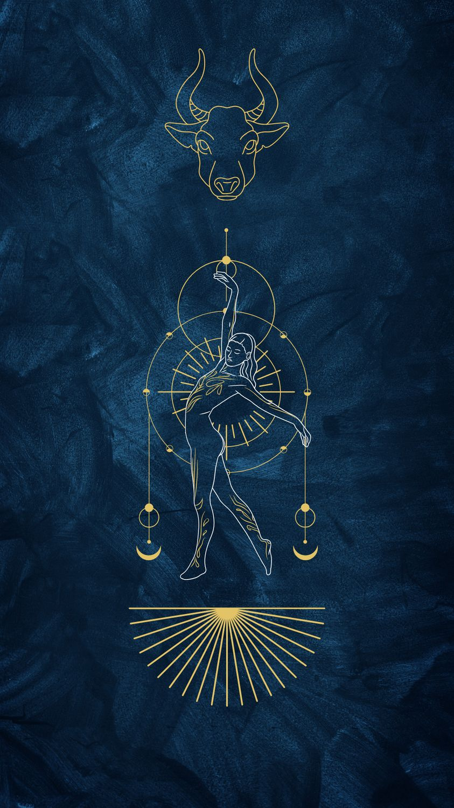

Boğa
20 Nisan – 20 Mayıs · Element: Toprak · Yönetici: Venüs

Genel Profil
Boğa; güven, istikrar ve somut sonuç odaklıdır. Sabırla inşa eder, kalıcı şeyler yaratır.
Değişime direnç gösterebilir; konfor alanı büyüdükçe esneklik ihtiyacı artar.
Güçlü Yönler
- Sabır ve dayanıklılık
- Sadakat
- Pratiklik
- Güven verme
Zorlayıcı Yönler
- İnatçılık
- Değişime direnç
- Aşırı sahiplenme
- Konfora düşkünlük
Aşk
Güven ve dokunuş önemli. Yavaş ama sağlam bağ kurar.
Kariyer
Finans, tasarım, gastronomi, inşaat/üretim, kalite ve süreç işleri.
İpucu
Bugün küçük bir yenilik dene: rutinde tek bir adımı değiştir.